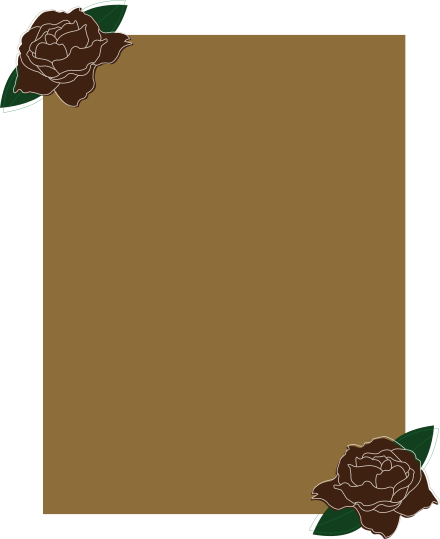
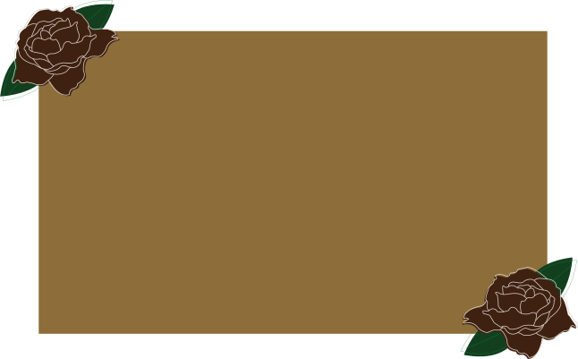
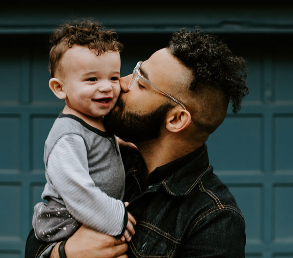

My Story
Hello! I’m Camille Rose. I am a wedding and lifestyle photgrapher that has been serving the DMV area for 13 years. I specialize in natural, authenic photos that tell your unqiue love story.
Testimonials

Kelly Smith
I had my wedding photos done by Camille. My mother has some health issues and needed longer breaks. She was so kind and considerate.

Malik Johnson
Camille is so kind and patient, even with two rowdy boys and energtic golden retrevier. I recommend her to friends and family.
Denise Wilson
I never had professional photos done befoe. Camille is so down-to-earth and makes you feel comfortable. I will defintley use her in the future.